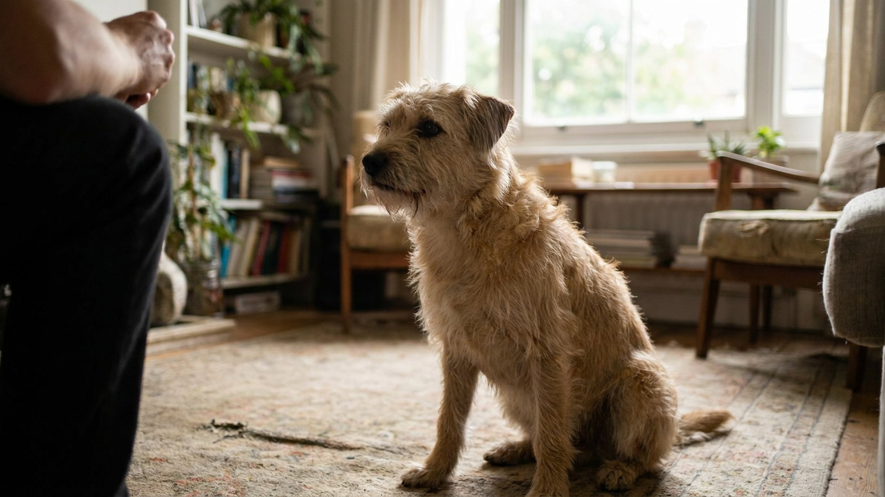

Кличка питомца: выбрать правильно и закрепить отклик

8 июня 2026 · 6 минут чтения · Воспитание · Питомцы
Называть питомца месяц — и он всё равно не реагирует. Знакомо? Дело редко в «тупости» животного. Чаще всего проблема в самой кличке или в том, как её произносят. Разбираем принципы хорошего имени, схему первых дней и ошибки, которые делают кличку «невидимой» для кошек и собак.
🐾 Первая помощь — всегда под рукой
AnimaLife подскажет, что делать в тревожной ситуации с питомцем ещё до визита к врачу. Откройте в один тап.
Открыть AnimaLife → Открыть в MAX →
Что делает кличку «слышимой» для животного
Кошки и собаки не понимают слова как смысловые единицы. Они реагируют на звуковой паттерн — конкретную последовательность звуков, интонацию и ритм. Это значит, что кличка работает как условный сигнал, а не как имя в человеческом понимании.
Хорошая кличка — та, которую легко произнести чётко и коротко, и которая звуково выделяется из фонового речевого потока.
Несколько принципов:
- 1–2 слога. Длинные имена типа «Барабашкин» в быту всё равно сокращаются до «Бара» — а значит, животное учит именно это. Лучше сразу называть так, как будете звать.
- Чёткий ударный звук в конце. Клички, заканчивающиеся на гласную «а», «я», «и» — Муся, Граф, Лики — легче различаются на слух, особенно для кошек (они лучше воспринимают высокочастотные звуки).
- Нет совпадений с бытовыми словами. Кличка «Боня» путается с «больно», «Маш» — с «машина» или именами людей. Животное не игнорирует вас — оно просто не понимает, когда к нему обращаются, а когда нет.
- Нет совпадений с командами. «Дай» как кличка — катастрофа. «Сит» (от sit) у собаки запутает обучение.
Как закрепить отклик у щенка: схема первой недели
Цель первой недели — создать устойчивую ассоциацию: звук клички = что-то хорошее происходит немедленно. Не «иди ко мне», не «сиди», просто — назвали, посмотрел или повернул голову, получил награду.
День 1–3: кличка = угощение
- Возьмите вкусное угощение, позовите кличку один раз (только один — не повторяйте).
- Как только щенок посмотрел в вашу сторону — немедленно «да!» и угощение.
- 10–15 повторений в день, разбитых на 3–4 коротких сессии по 3–5 минут.
- Не зовите имя, когда не готовы наградить — в первую неделю каждый вызов должен заканчиваться наградой.
День 4–7: отклик в разных условиях
- Начинайте звать кличку, когда щенок немного отвлёкся (занят игрушкой, нюхает что-то).
- Постепенно увеличивайте расстояние.
- Добавляйте лёгкие помехи: тихо работающий телевизор, другой человек в комнате.
Как закрепить отклик у котёнка: в чём разница
Кошки обучаются иначе, чем собаки, — они менее мотивированы социальным одобрением и более — едой и собственным комфортом. Схема похожа, но с поправками:
- Зовите кличку только перед чем-то приятным: кормлением, игрой, лаской (если котёнок её любит).
- Не зовите кличку перед неприятным: купанием, закапыванием капель, стрижкой когтей. Кличка должна ассоциироваться исключительно с хорошим.
- Кошки медленнее формируют рефлекс — дайте 2–3 недели вместо одной.
- Отклик кошки — это не всегда «прибежала». Повернула голову, навострила уши, встала — это уже отклик, маркируйте его.
5 ошибок, которые убивают отклик на кличку
- Повторять кличку несколько раз подряд. «Мурка, Мурка, Мурка!» — животное привыкает, что первые повторения ничего не значат, и начинает реагировать только на третье или вовсе игнорирует. Одно произнесение — ждите.
- Звать кличкой, когда злитесь. «Барсик!!!» раздражённым тоном несколько раз — и кличка начинает ассоциироваться с угрозой. Животное перестаёт откликаться из самозащиты.
- Использовать кличку как предупреждение о наказании. «Рекс...» угрожающим голосом перед тем, как забрать что-то или ограничить — разрушает ассоциацию.
- Зовут все, по-разному. Один человек говорит «Гоша», другой — «Гошка», третий — «Гошенька». Для животного это разные звуковые паттерны. Выберите одно имя — и все в доме используют только его.
- Переименовывать взрослое животное без переходного периода. Взрослая кошка или собака с устоявшейся кличкой не «забудет» старое имя за день. Если переименование необходимо (приют, смена хозяина) — используйте оба имени пару недель, постепенно переходя на новое.
🐾 Экономьте на лишних визитах к врачу
Сначала спросите AI-ветеринара в AnimaLife — часто этого достаточно, чтобы понять, нужен ли визит к врачу.
Спросить бесплатно → Спросить в MAX →
🐾 Понравился разбор?
Подпишитесь на канал — каждый день разбираем по одному тревожному симптому у кошек и собак: что в пределах нормы, а когда пора к врачу. Подпишитесь, чтобы не пропустить разбор, который может спасти здоровье вашего питомца.
Когда питомец «знает» кличку, но не реагирует
Частая ситуация: животное явно слышит — уши движутся, хвост дёргается — но не откликается. Это не игнор. Это один из двух сценариев:
- Кличка «обесценена». Её звали слишком часто без смысла, или в связке с неприятным. Решение — «переучить» через 1–2 недели чистых положительных ассоциаций.
- Нет достаточной мотивации в данный момент. Кошка занята охотой на пылинку, собака чует что-то интересное — внутренняя мотивация выше вашей. Это нормально. Повышайте ценность награды или снижайте конкурирующий стимул.
Хорошая кличка — это инструмент, а не украшение. Два слога, чёткое звучание, только приятные ассоциации — и животное будет откликаться надёжно, а не когда захочет.
← Все статьи · Открыть AnimaLife в Telegram · RSS